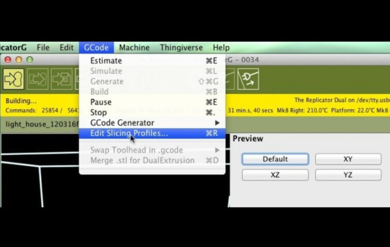
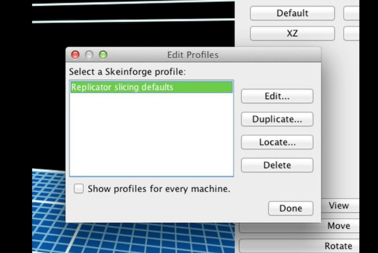
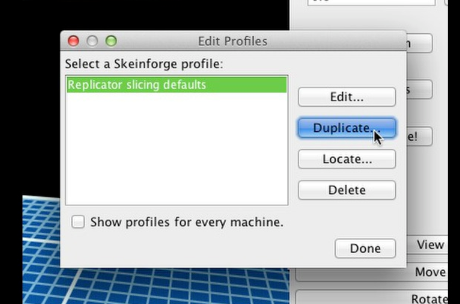
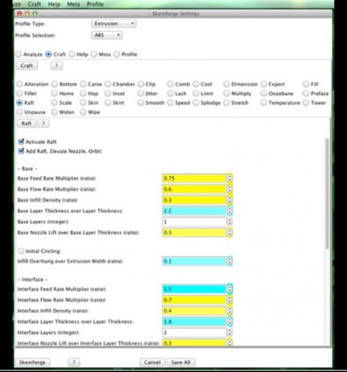
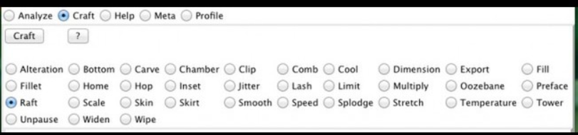
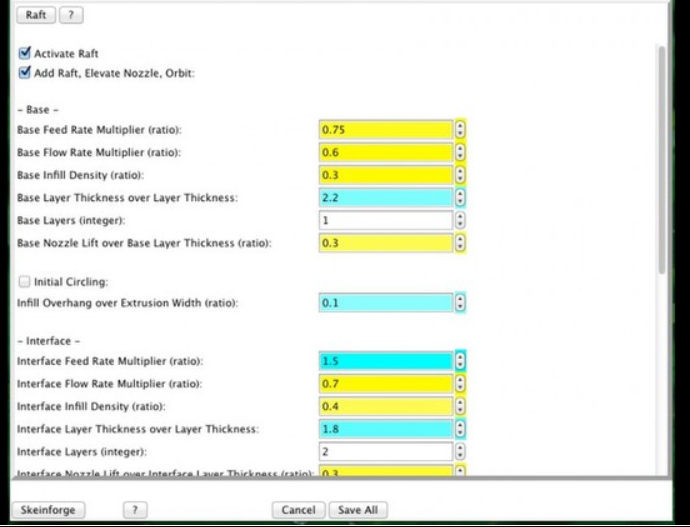

Method Firmware
Skeinforge
Skeinforge is one of the slicing engines you can use in ReplicatorG. Makerbot is no longer actively supporting ReplicatorG. We recommend upgrading to MakerBot Desktop. However, if you are planning to use ReplcatorG, this page will help you get started.
About Skeinforge
Skeinforge takes the settings you enter in Print-O-Matic and uses them to turn your 3D model into a toolpath for your MakerBot. This toolpath is generated as GCode, which is then converted to .x3g or .s3g before it's sent to your printer. You can set things like layer height and extrusion temperature through ReplicatorG, but Skeinforge has a lot more settings behind the scenes, and you can edit these manually by opening up the Skeinforge interface. Skeinforge is pretty complicated, and it can be very confusing, but getting familiar with even a few of the settings can let you do all kinds of cool things with your prints.
Editing Skeinforge Profiles Through ReplicatorG
To get started with Skeinforge, go to ReplicatorG's GCode menu and select Edit Slicing Profiles…

A window will pop up showing you all of the available Skeinforge profiles. If you're using a Thing-O-Matic or a Cupcake, you'll see different profiles for different configurations of the machine. If you're using the MakerBot Replicator (Original) and you haven't edited your profiles before, you'll only see a default profile.

It's a good idea to leave the original profiles intact, so instead of editing a profile we're going to duplicate it. Choose the profile that best matches the machine you're using -- that will give you a good starting point -- and click the Duplicate... button.

Once you've given your new profile a name, the Skeinforge settings window will open.

Check that Craft is selected from the radio buttons near the top of the window. Everything in the section underneath that is a plugin that can make changes to a different aspect of your Gcode. Each plugin contains a number of settings that can change the way an object prints out.

The settings for each plugin live in the big lower section of the settings window.

Some Craft Plugins
There are about thirty different Craft plugins in recent versions of Skeinforge. Some of them can be extremely useful, while there are others you'll probably never want to touch. Here are a few of the more useful and interesting ones.
Alteration
Gcode generated by Skeinforge usually includes a snippet at the front to do things like turn on the heaters and move the extruder to the starting position and a similar one at the end of the Gcode to finish everything off. These are called the start and end Gcode files, and Alteration is the plugin where the locations for these files are specified. You can set these to different locations if you want to use custom Gcode.
When you use the default profiles in MakerWare, the start and end Gcode will be added by MakerWare's background service, Conveyor, and the Alteration plugin is turned off. When you make a custom profile, however, Alteration is turned on so that you can edit your start and end Gcode files. Currently the default start and end Gcode for all MakerWare custom profiles is configured for the MakerBot Replicator 2, but comments in the file explain how to alter it for a MakerBot Replicator (Original) with a single or dual extruder.
Carve
Layer height is exactly the same setting you see in Print-O-Matic. The smaller the layer height, the finer the vertical resolution of your print. Things to keep in mind: very small layers may look great, but they will take a lot longer to print -- for every layer you would print at .3 mm, you have to print three layers at .1 mm to make up the same section of your model. Note that because Print-O-Matic overrides this setting, the value you enter here won't be used unless Print-O-Matic is turned off.
Cool
Cool is about giving each layer a little time to cool off before you put the next layer down on top of it. The big setting to pay attention to here is Minimum Layer Time -- this is the number of seconds that even tiny layers will take when Cool is turned on. Basically, layers that take up a significant amount of space have a built-in cool time, but with a layer that takes up almost no space, your extruder ends up putting down molten plastic on top of other molten plastic, and you end up with a mess.
The Cool setting in the default MakerBot Replicator (Original) profile is set to 5 seconds, but if you're printing with PLA and whatever you're making is failing at the narrow bits, try lowering that to about two seconds and see if that helps. With ABS, on the other hand, raising the minimum layer time can improve small and detailed builds.
If you have a DC motor extruder, you'll want to make sure you have Cool Type set to Orbit rather than Slow Down. Slow Down just slows down each layer so it takes at least the Minimum Layer Time, but that doesn't work well with DC extruders. Orbit lets your object print at the usual speed and then has the extruder go around it in circles until the Minimum Layer Time has passed.
Dimension
Dimension contains a lot of different settings, but they all deal with how much filament is being fed through your extruder and when. The two filament settings tell Skeinforge about your filament so that it knows how much filament to push through to get the amount of plastic you need. To find out your Filament Diameter, use calipers to take several measurements along a piece of filament and average them. Filament Packing Density is harder to figure out. If you seem to be getting the right amount of plastic in your prints, don't worry about it. Otherwise, you can raise the filament density to get your extruder to put out less plastic and lower it to get the extruder to put out more.
The other set of Dimension options you might be interested in is the one dealing with retraction. Retraction is when your extruder sucks a little bit of filament back in while it's traveling, so you don't end up with oozy little threads of plastic everywhere. Minimum Travel for Retraction is the setting that triggers this -- with the default value of one millimeter, your extruder will retract some filament every time it has to travel farther than 1 mm without extruding, and setting it to 0 will turn off retraction completely. The amount of filament retracted is defined by Retraction Distance. Restart Extra Distance deals with when your extruder starts extruding again. Entering a negative value and having it restart a tiny bit late can reduce extraneous blobs of plastic on your print, but can be a disadvantage when printing small, delicate features.
Fill
Fill, of course, is responsible for infill, but a lot of things can be lumped under that heading.
The Diaphragm is a group of one or more solid layers distributed throughout your print at specific intervals. The period defines how often a diaphragm prints -- a Diaphragm Period of 100 means you'll get one every hundred layers. The Diaphragm Thickness is how many solid layers you get in each diaphragm.
Next are shells. You'll notice that all of these settings deal with Extra Shells. That's because you're going to get at least one shell whether you like it or not. Any number here will be added to that one initial shell. The settings here specify whether they apply to Base or Sparse layers. Base layers are the solid layers at the very beginning of your print, but they're also any other even numbered solid layer. Odd numbered solid layers are the Alternating Solid Layers. Sparse Layers are everything else -- all the layers that get an infill pattern. If you're using Print-O-Matic, it will override all three extra shell settings with the number in Number of Shells.
Infill Pattern is pretty self-explanatory -- you're just selecting what shape you want your infill pattern to be made up of. Choose Grid Circular for circles, Grid Hexagonal for hexagons, etc. Grid Rectangular prints a diamond pattern.
The Grid settings have to do with specific infill patterns. Grid Circle Separation over Perimeter Width dictates how far apart the circles are if you've chosen Grid Circular. The three Grid Junction settings deal with the pattern you get when you choose Grid Rectangular.
Infill Rotation lets you alternate the angle of your infill. Begin Rotation is the angle your infill is printed at to start. Odd Layer Extra Rotation is the additional rotation on alternating layers, so that you can have a sort of crosshatching pattern. Alternation between these two angles is the default, but you can change that with Begin Rotation Repeat -- the number you enter here will be the number of "odd layers" between each layer with the Begin angle. Infill Solidity is exactly the same as the infill setting in Print-O-Matic, except that here it's a decimal instead of a percentage.
Solid Surface Thickness is a pretty basic one that you might want to mess with -- this is what determines how many solid layers your extruder will put down when it's creating a solid horizontal surface, like a floor or roof. The default is three, but you can add strength with more layers or set it to zero to get an object with no base or roof. This setting is especially handy when you're printing at very low layer heights.
Start From Choice lets you choose where to begin each new layer -- at the lower left, or just above where it finished the last layer. The default is for each layer to start at the lower left, because otherwise the first bit of the new layer is always right on top of the still-molten last bit of the old layer. On the other hand, this is also the reason you get a little seam up the side of an object where all the layer changes happen one on top of another. Thread Sequence is another interesting one. It deals with infill, perimeter (the outer shell) and loops (any inner shells) and lets you choose which of them is printed first.
Hop
Hop lowers your platform (or if you're using a Cupcake or Thing-O-Matic, raises your extruder) a tiny bit while the extruder is traveling. If you're having a hard time with a build because your nozzle is hitting small or delicate parts and knocking them off base, hop might be able to help, but otherwise there's no reason to turn it on. Hop over Layer Thickness defines the change in Z height during hops and Hop Angle determines how gradually it gets there.
Jitter
Remember Start From Choice from the Fill plugin? Having each layer begin at the lower left corner is a good way to make sure you don't start a layer on top of still-melted plastic, but it also means every Z-height change is right on top of the one before it, creating a seam up the side of your object. Jitter distributes that Z change over a wider area, so that it's less visible. The default setting is to have Jitter turned on and set to two, but that is a relatively small value. Some users have reported that 16 works well.
Multiply
Multiply lets you print more than one copy of a thing at once. Basically, you enter a Number of Rows and a Number of Columns to create a total number of cells on your build plate. When Multiply is activated, one copy of your thing will be built in each cell. Separation over Perimeter Width determines how far apart each copy of your thing will be from its neighbor, and Reverse Sequence every Odd Layer lets you do half the layers backwards so that your extruder won't have to move all the way across the build plate to start each new layer. That option is turned off by default, because it results in the beginning of the new layer being put down on still-melted plastic, which will decrease print quality.
Multiply also lets you choose a different "center" on your platform. Set rows and columns both to 1, make sure Multiply is activated, and enter a set of X and Y coordinates.
Raft
You're probably already familiar with the raft, a removable base that helps your prints stick to the platform. This plugin lets you control a number of different things having to do with the raft and with support material.
Your raft has two parts: the Base Layer and the Interface Layers. The base layer is the part that's meant to stick really well to the platform; the extrusion is wider and more substantial than it is most of the time, and it extrudes more slowly. The interface layers are thinner, and are meant to make it easy to detach your object from the base layer. The default raft has one base layer and two interface layers, but you can change that by entering different numbers for Base Layers and Interface Layers.
The first option here is to activate the plugin. Because there are so many things going on in Raft besides the details of the raft itself, it's a good idea to keep it activated. If you want to turn off the raft, you can do that by turning off the next option: in Skeinforge 50 it's called Add Raft, Elevate Nozzle, Orbit, but the name is slightly different in other versions of Skeinforge.
There are a lot of different options in Raft, most of which you can ignore. Here are a few that you might be interested in messing around with.
Base Feed Rate Multiplier and Base Flow Rate Multiplier: both of these affect the thickness of the base layer extrusion. Raising the feed rate will make the extrusion thinner and lowering it will make the extrusion thicker. With the flow rate it's the other way around. Interface Feed Rate Multiplier and Interface Flow Rate Multiplier work the same way.
Raft size = [Object length + Raft Margin + (Object length x Raft Additional Margin over Length)] x [Object width + Raft Margin + (Object width x Raft Additional Margin over Length)]. If that seems unnecessarily complicated, don't worry -- to increase the size of your raft, just increase the number in Raft Margin.
The remaining options have to do with support material. Support Cross Hatch is an interesting option. If you're familiar with using support, you know that it's usually printed as a series of horizontal lines, with each layer pretty much identical to the layer before it. With Support Cross Hatch, the lines or each layer are rotated 90° from the previous layer, creating a grid. This makes the support material much stronger, but it also makes it harder to remove.
Support Material Choice corresponds to the support options in the Generate GCode window: None turns support off completely. Empty Layers Only adds support material on layers without anything on them -- this lets you build an object that's floating above the platform. Everywhere prints support everywhere that it's not printing your object, and Exterior only prints support only on the outside of your object, and only under overhangs as identified by the Support Minimum Angle. The default minimum angle is 45.°
Support Flow Rate over Operating Flow Rate affects the rate at which plastic will extrude during the printing of support. Entering 1 here will make the support flow rate the same as your regular flow rate. Entering a number less than one will make the lines of support extrusion thinner and easier to remove.
Support Gap over Perimeter Extrusion determines how far the support material is from the surface of your object. The smaller the number, the smaller the gap.
Skin
The idea behind the Skin plugin is that you can have multiple perimeter layers for each layer of infill. That way, you can have a very smooth surface without having your print take two or three times longer. Keep in mind, though, that you're only smoothing the transitions between layer, not adding additional resolution.
Do do this, Activate Skin and set Vertical Divisions to a number larger than one. Keep in mind the layer height you plan to slice at while you're doing this. For example, if you want a 0.1mm layer height on the outside, you could set Vertical Divisions to 3 and slice at 0.3mm, or set Vertical Divisions to 2 and slice at 0.2mm. Horizontal Infill Divisions works similarly, but splits perimeter extrusion vertically, smoothing out upper surfaces.
Because you could be printing multiple perimeters at lower Z heights than an infill layer you've already printed, there's the potential for your nozzle to drag through that infill. Hop When Extruding Infill should help you avoid that.
Skirt
Skirt lays down an outline around your object, which helps prime your extruder and shows exactly where on the platform your print will form. Some users like Skirt as an alternative to the anchor that extrudes at the beginning of each build and can add a small blob to the corner of your first layer. To turn off the anchor, you can delete it from your start .gcode, and to turn on Skirt, just check Activate Skirt.
You can also use Skirt to create an insulating baffle around your build by changing the setting for Layers To. By default it's set to 1, creating a single, layer high outline, but if you set Layers To to a higher number, Skirt will create an outline on every layer up to that point. Try setting it to something absurdly high, like 9748935. Now the plugin will print a thin shell around the outside of your model.
You can change the distance between the outline and the object by changing the Gap over Perimeter Width setting, and you can change the shape of the outline by toggling Convex: if it's unchecked, the outline will closely follow the shape of the model. If it's checked, the shape of the outline will only contain convex angles.
Speed
Speed is mostly just a collection of settings that lets you individually adjust the speeds of certain parts of a build. This is the home of your main Feed Rate and Flow Rate settings -- the ones you change in Print-O-Matic -- but it also lets you set multipliers of those rates for first layers, bridges, and perimeters.
So, if you're printing accelerated and the perimeter of your first layer won't stick, try lowering the Object First Layer Feed Rate Perimeter Multiplier and the Object First Layer Flow Rate Perimeter Multiplier to slow it down. Or if you're making something with bridges (lines of extrusion that bridge a gap) and those sections are sagging, raise the Bridge Feed Rate Multiplier and Bridge Flow Rate Multiplier a little (try a value between one and two). Make sure to always edit both the feed and flow rates together -- editing just one will change the weight of the line of extruded plastic.
Print-O-Matic
Print-O-Matic isn't a Skeinforge setting; it's the lower half of the Generate GCode window in ReplicatorG, where you can change basic settings like the layer height and feedrates. Print-O-Matic does this by overriding Skeinforge settings, so if you change something in Skeinforge that's also addressed by Print-O-Matic, that change won't take effect unless Print-O-Matic is turned off. Some of the Print-O-Matic settings override multiple Skeinforge settings. To see exactly which settings Print-O-Matic overrides, follow the directions on our Print-O-Matic page.
Everything Else
For more information about what each individual setting does, go to the Skeinforge wiki page. It has basic information about all of the available settings, as well as links to other resources, like tips and tutorials people have put together -- just keep in mind that some of what you find, especially in the linked tutorials, may not be accurate anymore.